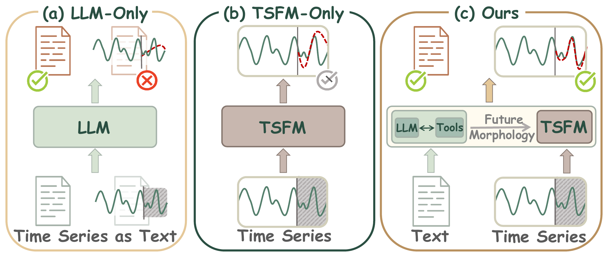
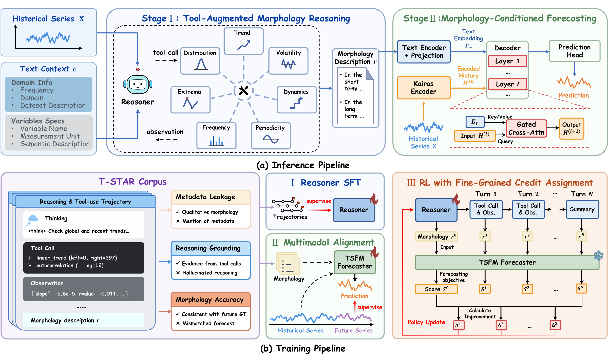
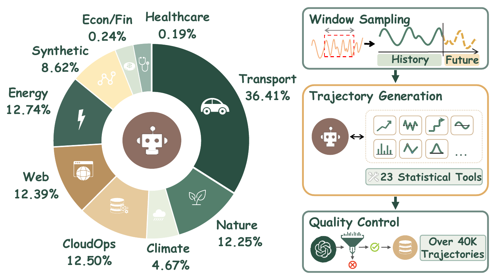
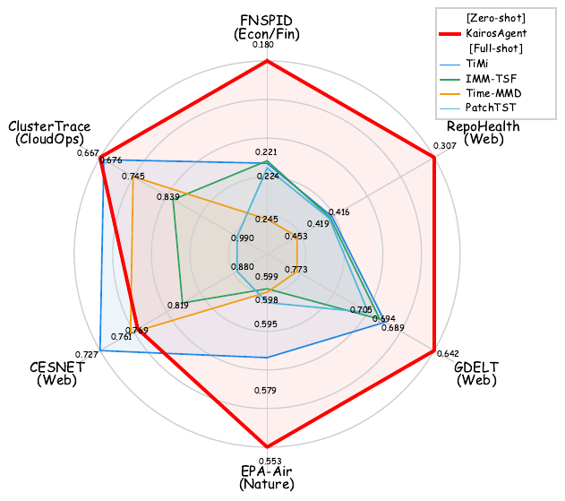
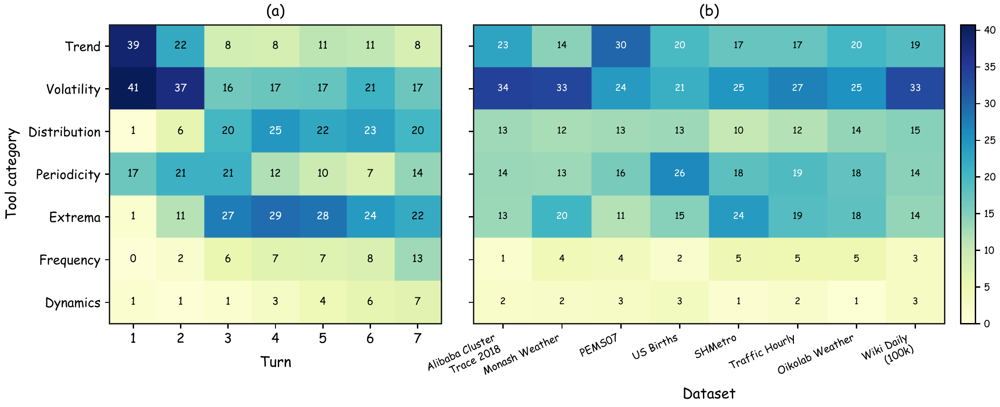

Figure 1. Unlike LLM-only models that suffer numerical hallucinations and TSFM-only models that lack semantic reasoning, KairosAgent bridges semantic reasoning and numerical forecasting.
Cross-domain multimodal time series forecasting is a challenging task, requiring models to integrate precise numerical comprehension, cross-domain semantic understanding, and effective multimodal fusion. Existing approaches either build Time Series Foundation Models (TSFMs) from scratch or leverage pretrained Large Language Models (LLMs). However, TSFMs often overlook semantic understanding and lack the ability to perform future-oriented semantic reasoning, and LLMs struggle with numerical comprehension and accurate quantitative forecasting. To overcome these limitations, we propose KairosAgent, a novel agentic framework for multimodal time series forecasting, including an LLM-based reasoner and a TSFM-based forecaster. KairosAgent unifies textual reasoning and numerical forecasting by dynamically invoking analytical tools to enhance the numerical understanding and semantic reasoning capabilities of LLMs. The reasoning results are subsequently fused into the TSFM pipeline, enabling more accurate and reliable future predictions. To further improve the reasoning, we curate a large-scale corpus of high-quality trajectories, alongside a reinforcement learning from forecasting paradigm with multi-turn refinement and turn-level credit assignment. Experiments demonstrate that KairosAgent achieves superior zero-shot forecasting performance while maximizing the utility of pretrained LLMs and TSFMs, presenting a promising direction for efficient and interpretable time series agents.

Figure 2. KairosAgent bridges semantic reasoning and numerical forecasting through an LLM reasoner, tool-grounded morphology analysis, and a TSFM forecaster.
KairosAgent follows a modular reason-then-forecast design: the LLM reasoner handles semantic pattern analysis, while the TSFM forecaster preserves precise numerical prediction.
Given historical observations and textual context, the LLM reasoner interacts with statistical tools over multiple turns to inspect trend, periodicity, volatility, and regime changes. It then synthesizes a compact morphology description that captures anticipated future patterns without committing to exact numeric values.
The morphology description is encoded as a semantic prior and fused into the TSFM decoder through lightweight gated cross-modal fusion. This keeps numerical generation inside the native time series model while injecting future-oriented semantic reasoning into the forecasting pipeline.
KairosAgent is trained with T-STAR, a 40k-trajectory time series reasoning corpus with tool augmentation. The corpus covers diverse domains and provides process-level supervision for multi-turn analytical reasoning.

Figure 3. Overview of the T-STAR corpus and its tool-augmented trajectory generation pipeline.
SFT warms up the LLM reasoner on T-STAR trajectories, teaching it when to invoke tools, how to interpret tool feedback, and how to write structured morphology descriptions for downstream forecasting.
The TSFM forecaster is trained to consume morphology descriptions as semantic priors. A text encoder maps morphology descriptions into compact semantic embeddings, while cross-modal fusion modules inject these priors into the Kairos decoder under the quantile forecasting objective.
GRPO refines the reasoner with the frozen Stage II forecaster as a reward module. Instead of assigning only a final trajectory reward, turn-level credit assignment scores the marginal forecasting utility of each reasoning turn and tool call.
KairosAgent improves future morphology reasoning by grounding LLM analysis in statistical tool observations. With turn-level RL, the 4B reasoner achieves the best accuracy among comparable-scale models across all evaluated Time-MMD domains.
| Model | Climate | Energy | Traffic |
|---|---|---|---|
| Advanced Models (reference only) | |||
| GPT-5.2 | 97.80 | 84.12 | 34.95 |
| DeepSeek-R1 | 99.18 | 79.51 | 37.76 |
| Comparable-Scale Models | |||
| Llama-3.1-8B-Instruct | 52.47 | 38.72 | 43.62 |
| DeepSeek-R1-Distill-Qwen-7B | 42.86 | 5.08 | 14.29 |
| KairosAgent-4B (SFT-Only) | 97.80 | 45.21 | 40.56 |
| + Outcome-Level Reward RL | 96.70 | 43.33 | 38.27 |
| + Turn-Level Reward RL | 98.08 | 50.47 | 43.88 |
Morphology reasoning accuracy (%) on Time-MMD. Red bold and blue underline mark best and second-best among open-source models.
KairosAgent achieves strong zero-shot forecasting on both regular Time-MMD and irregular Time-IMM benchmarks. The Time-MMD table summarizes domain-level MSE and MAE against zero-shot TSFMs and full-shot baselines, while the Time-IMM radar chart shows robustness under temporal irregularities.
| Type | Zero-Shot Models | Full-Shot Multimodal Models | Full-Shot Unimodal Models | |||||||||||||||||
|---|---|---|---|---|---|---|---|---|---|---|---|---|---|---|---|---|---|---|---|---|
| Models | KairosAgent | Aurora | Sundial | Moirai | ChronosBolt | T3Time | TimeCMA | CALF | PatchTST | DLinear | ||||||||||
| MSE | MAE | MSE | MAE | MSE | MAE | MSE | MAE | MSE | MAE | MSE | MAE | MSE | MAE | MSE | MAE | MSE | MAE | MSE | MAE | |
| Agriculture | 0.194 | 0.282 | 0.282 | 0.356 | 0.327 | 0.366 | 0.239 | 0.306 | 0.218 | 0.302 | 0.229 | 0.303 | 0.318 | 0.360 | 0.241 | 0.311 | 0.248 | 0.308 | 0.377 | 0.396 |
| Climate | 0.863 | 0.739 | 0.863 | 0.747 | 0.920 | 0.765 | 0.982 | 0.792 | 0.948 | 0.788 | 1.206 | 0.894 | 1.282 | 0.926 | 1.199 | 0.895 | 1.176 | 0.891 | 1.036 | 0.807 |
| Economy | 0.186 | 0.335 | 0.275 | 0.412 | 0.216 | 0.348 | 0.198 | 0.345 | 0.192 | 0.342 | 0.239 | 0.384 | 0.262 | 0.412 | 0.223 | 0.370 | 0.223 | 0.380 | 0.218 | 0.370 |
| Energy | 0.217 | 0.330 | 0.251 | 0.370 | 0.234 | 0.337 | 0.261 | 0.347 | 0.263 | 0.355 | 0.266 | 0.378 | 0.351 | 0.447 | 0.258 | 0.373 | 0.243 | 0.353 | 0.233 | 0.346 |
| Environment | 0.378 | 0.435 | 0.276 | 0.379 | 0.379 | 0.443 | 0.412 | 0.446 | 0.427 | 0.462 | 0.489 | 0.507 | 0.536 | 0.533 | 0.537 | 0.509 | 0.496 | 0.513 | 0.591 | 0.627 |
| Security | 76.658 | 4.340 | 72.763 | 4.085 | 83.403 | 4.836 | 74.249 | 4.129 | 73.977 | 4.117 | 72.113 | 4.070 | 72.011 | 4.113 | 73.267 | 4.040 | 76.105 | 4.445 | 82.521 | 4.891 |
| Social Good | 0.769 | 0.376 | 0.828 | 0.506 | 0.819 | 0.377 | 0.868 | 0.391 | 0.951 | 0.388 | 0.998 | 0.432 | 1.092 | 0.578 | 0.890 | 0.416 | 0.959 | 0.475 | 0.891 | 0.448 |
| Traffic | 0.151 | 0.231 | 0.162 | 0.289 | 0.228 | 0.292 | 0.186 | 0.263 | 0.222 | 0.249 | 0.289 | 0.368 | 0.297 | 0.412 | 0.227 | 0.305 | 0.209 | 0.316 | 0.219 | 0.315 |
| 1st Count | 6 | 6 | 2 | 1 | 0 | 0 | 0 | 0 | 0 | 0 | 0 | 0 | 1 | 0 | 0 | 1 | 0 | 0 | 0 | 0 |
Time-MMD performance across diverse domains. Lower MSE and MAE are better. Red bold and blue underline mark best and second-best results.

Figure 4. Time-IMM MAE comparison across irregular multimodal time series forecasting tasks.
The agent learns a data-dependent tool selection policy rather than a fixed calling pattern. Tool usage shifts across reasoning turns and adapts to dataset-specific temporal properties.

Figure 5. Tool usage distributions over reasoning turns and datasets in T-STAR trajectories.